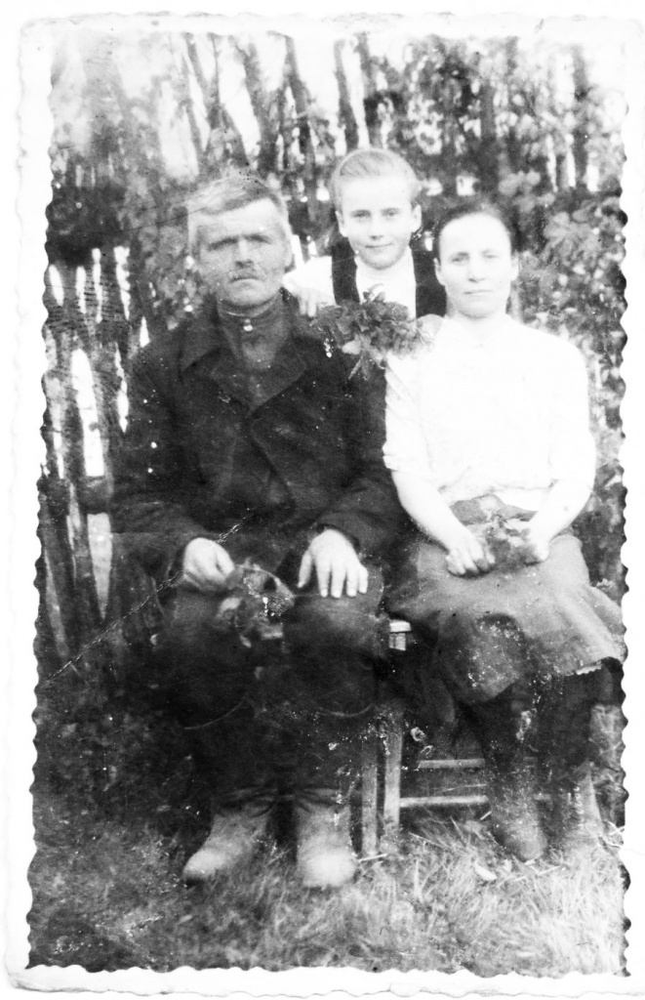
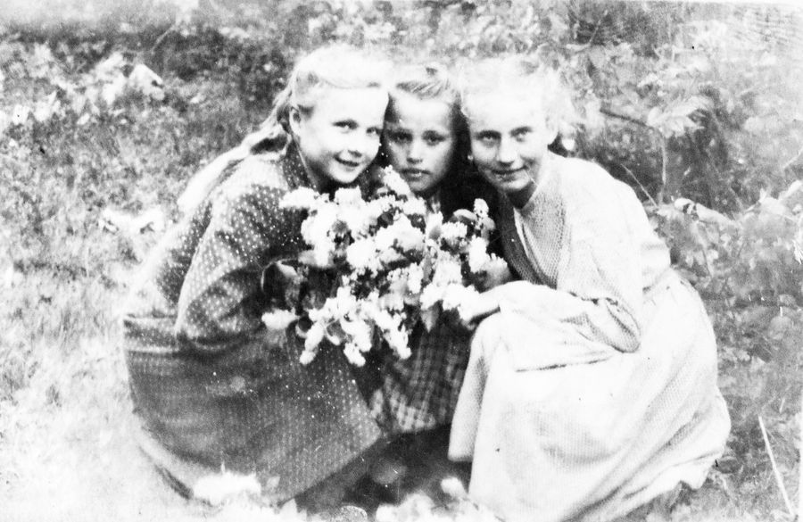
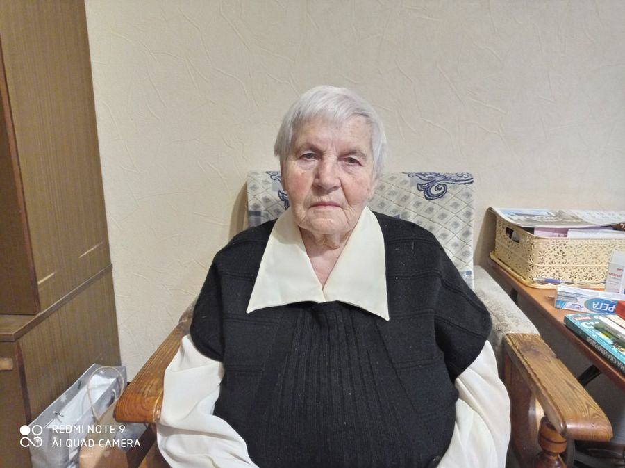
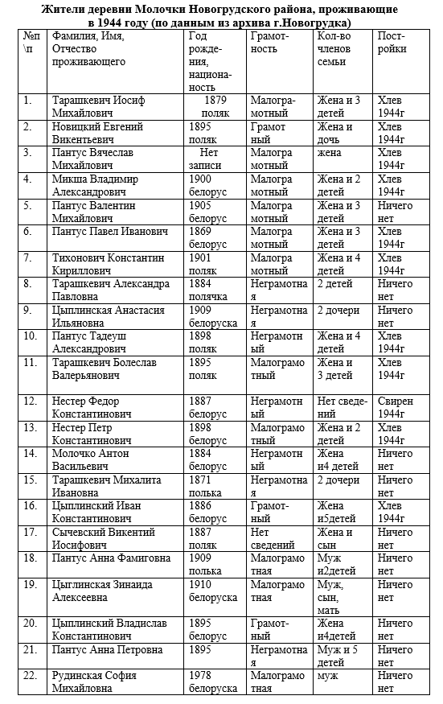

На Новогрудчине стартовала акция в память о сожженных в годы Великой Отечественной войны деревнях. В средней школе №5 Новогрудка огромное внимание уделяется исследованию военной истории. Участники поисково – исследовательской группы под руководством руководителя по военно –патриотическому воспитанию Игуминовой Галины Константиновны, провели большую работу по поиску информации о деревни Молочки Новогрудского района, которую 18 декабря 1943 года сожгли фашисты, как и многие сестры Хатыни. Эта деревня уже долгое время не функционирует, с 2014 года. Но всё-таки участники провели колоссальную работу по восстановлению информации о сожжённой деревне Молочки Новогрудского района. Нашли жительницу этой деревни и взяли интервью по её воспоминаниям.
«Мстить нельзя, помнить обязаны» С таких слов начинается письмо волонтерам проекта ТЦСОН ветерана педагогического труда Леокадии Евгеньевны Бужинской (в девичестве — Новицкой) из аг. Заболоть. Женщине было неполных три года, когда началась Великая Отечественная война. Казалось бы, дети такого возраста вряд ли помнят происходящее, но моя память сохранила отдельные эпизоды, что-то отложилось из рассказов родных, — говорит Леокадия Евгеньевна. — Родилась я в небольшой деревне Молочки Новогрудского района (в те времена — Любчанского). О начале войны известили самолеты с черными крестами, летевшие с Запада на Восток, и взрывы — бомбили Новогрудок. Через несколько дней в деревне появились немцы. «Предатели Родины» или способ остаться в живых? Запомнился такой факт: у нас в цветнике некоторое время была большая доска, на которой было написано «староста». Мой отец был старостой неделю, он должен был собирать сельчан на собрания, передавать им приказы немцев. Потом эту доску перенесли к соседу и так дальше. Никто в деревне не согласился исполнять обязанности старосты постоянно. Сегодня мы понимаем: те, кого зачастую зачисляли в «предатели Родины», всего лишь старались уцелеть, прокормить себя и семью, оставшись чистыми перед законом и совестью. Многие молодые ребята из деревни подались в партизанский отряд. Немцы постоянно требовали выдать их, разыскивали. Оставшихся мужчин и молодежь партиями отправляли на работы в Германию. Добрый доктор Весной 1943 года в нашей деревне стоял партизанский отряд. У моих родителей был большой дом и овин, поэтому у нас разместилась партизанская кухня. У соседей расположился штаб отряда, где жители Молочек собирались, чтоб «слушать Москву» и обсуждать последние новости с фронта. В отряде был врач — молодой, красивый «дядя», так я его называла, который однажды спас мне жизнь. У меня был сильный приступ — боль в животе и рвота. «Острый аппендицит. Срочно нужна операция!» — сделал заключение доктор. Естественно, что в полевых условиях выполнить это было практически невозможно. И врач попытался оттянуть операцию: давал мне какие-то растворы, настои… Лечение помогло — аппендицит мне удалили спустя семь лет. Лекарь стал большим другом для меня, ребенка, проведывал, приносил подарки: несколько кусочков рафинада, «зайчиков хлеб», красивые шишки. Стереть с лица земли После того, как партизанский отряд перебазировался в другое место, очень частыми стали немецкие налеты. Соседнюю деревню Ольховка разбомбили. 18 декабря 1943 года немцы сожгли наши Молочки и несколько близлежащих населенных пунктов: Отминово, Детомлю, Люкевичи, Лозы, Гнильцы, Пукачи, Демиды. Помню, как трое полицаев обходили дома и велели собираться, мол, скоро здесь будут проходить бои, поэтому мирное население вывезут. С собой разрешали брать теплые вещи, продукты. Наши пожитки погрузили на две подводы, коров, жеребенка увели, кур выпустили, кабана убили и погрузили на немецкую машину. Нас отправили за деревню, где уже были односельчане. Как стало темнеть, опустевшие дома на наших глазах стали поджигать. Жуткое зрелище: огромные языки пламени, крики и плач людей, рев скота, а вокруг — вооруженные люди. Спасительная «сушня» После долгих скитаний порознь мои родные отыскали друг друга. Все вместе мы отправились домой. Встретили нас пепелище и уцелевшая печь. Примерно так выглядела вся деревня — 22 дома. Около леса сохранилась «сушня» — большая землянка, где раньше сушили льнотресту. Там мы и поселились. В землянке было несколько семей, из-за тесноты она использовалась в основном для ночлега. Внутри по периметру соорудили из жердей полати — лежаки для детей. Взрослые спали прямо на земле. В «сушне» была полная антисанитария, люди начали болеть тифом. Переболела и я. Питались плохо: в основном, это был картофель и каша из дробленого зерна, которые прятали в лесу. Если кому-то родственники из уцелевших деревень передавали немного сала или жира, в Молочках был праздник. Жили дружно, всем делились. На целую деревню была одна корова-кормилица. Молоко доставалось детям по очереди. Со временем появилась возможность высаживать картофель, сеять зерновые. Стали сооружать семейные шалаши — и «сушня» стала разгружаться. Леокадия Евгеньевна с родителями, 1949г. Холодно, но спокойно Летом 1944-го нас освободили. Оставшихся в деревне мужчин забрали в Красную Армию. На время мобилизации моему папе было 49 лет. На фронт его не отправили, он участвовал в заготовке леса. Заболев тяжелым воспалением, долго не мог прийти в себя, позже его комиссовали. Осенью он вернулся к нам. Завершил строительство дома. В нем было холодно, но спокойно. Нам вернули корову, собрали урожай с посевов — жить стало легче. Школьные подруги, 1952г. Доска, стол учителя и две парты В 1945 году в д. Детомля открылась начальная школа. Первоклашкой я стала в 8 лет. Учеников было много, учителя — местные жители. В большом доме размещались доска, стол учителя и две парты. Привилегия сидеть за партами была у третьеклассников, а мы, завидуя им, учились у окошек. На зимних каникулах родители из досок сделали два длинных стола и две скамьи. Во втором полугодии мы занимались уже сидя. Из школьных принадлежностей были две тетради и полкарандаша. Перейдя во второй класс, мы учились за партами, имели достаточно тетрадей, один комплект учебников на двоих. А вот цветные карандаши, чернила, краски все еще были в дефиците. Теперь нас учили выпускники Новогрудского педучилища. Это история моего военного детства.
Описание деревни Молочки Новогрудского района в 1943 году до сожжения деревни из рассказа жительницы, а.г.Заболоць Вороновского района Гродненской области Бужинской Леокадии Евгеньевны. Записала рассказ руководитель во военной –патриотическому воспитанию средней школы № 5 г.Новогрудка Игуминова Галина Константиновна. В деревне было 22 дома. Располагались они на одной улице. Улица была не мощеная. Один дом располагался за огородами. Дома все были деревянные, обтесанное дерево, крыши были накрыты соломой (мало) под колос (колос шел вниз) и страхарку (колос шел вверх), остальные дома были накрыты дранкой. Накрывали крыши мужчины вручную. Вход у всех был с улицы в дом. Дома были добротные. Но ее дом был на высокой подмуровке. Дед ее был печник и плотник, хороший специалист. Поэтому и дом был очень добротный. Но не во всех домах была подмуровка высокая. Схема была такова ее дома: вход с улицы прямо кухня, налево – кладовка, направо большая комната. К дому были пристроен хлев (держали корову, телушку, овцы, кони). При хлебе пристроен был курятник, свинушка. Отдельно от постройки в стороне стояло гумно справо из дерева на высоких сохах высокое. Гумно было у всех дворов. Был колодец во дворе, но не у всех в деревне. В каждом дворе был огород. Огороды были у всех разные. У ее семьи огород был 1 гектар. Подмурки в домах были разные. У некоторых подмурки из камня, у других лежали доски, у их дома был камень, отштукатурен цементом. Заборы у всех был вдоль улицы частокол ( забор из кольев, заостренные вверх, прибитые очень часто), огороды были огорожены галинами деревьев. Погребов в деревне не было т.к. близко были грунтовые воды. В лесу выкапывали яму (хвойная) и хранили картофель. На еду картофель хранили в кладовке. Через деревню протекал ручеек поперек деревни, через улицу. Был мостик через него. Лес был вокруг деревни очень близко. Слево направо было болотце, а слева поле 300-400 метров, сенокосы. Партизаны в лесу стояли. Днем были немцы. Ночью приходили партизаны. Две девушки спали у них на кухне. Остальные партизаны мужчины в гумне. Рядом у соседа Пантус Александра был партизанский штаб. Был радиоприемник. Все собирались и слушали Москву. Самолеты немецкие летали, но их деревню не бомбили. Жители деревни (старики, женщины, дети) прятались в лесу, только дома оставались некоторые молодые хозяева. Рядом в д.Ольховка бомбили немцы с самолетов, но не все дома были разрушены. Немцы сожгли осенью деревню в 1943 году. Уехали все жители по родственникам. Весной 1944 года вернулись домой. Жили в сушне (землянка) где лен сушили. Спали на земле, дети спали на подстилках. Начали отстраивать деревню в 1944 году. Все вместе, дружно по очереди привозили бревна, складывали сруб, а затем хозяин топором обчесывал дерево сруба.
 Великая Отечественная война в моей памяти на всю жизнь. Я родилась и выросла в небольшой деревне Молочки Новогрудского района (в те времена Любчанского). В деревне было 22 дома. Со всех сторон она была окружена лесом. Теперь этой деревни нет. Мне было неполных 3 года (я родилась в ноябре 1938 года). Казалось бы дети того возраста не должны ничего помнить, но моя память сохранила отдельные эпизоды. О них я хочу рассказать в своих воспоминаниях. Первые воспоминания: самолеты с черными крестами на крыльях летят с запада на восток. Люди выбежали на улицу, поняли, что началась война, стали плакать. Вскоре послышались взрывы. Бомбили Новогрудок. Следующее, что мне запомнилось: в деревне появились немцы. Они согнали жителей на собрание. Я, конечно, не понимала о чем идет речь. Говорил немец в военной форме, а переводил мужчина в гражданской одежде. Хорошо помню, как немец часто взмахивал рукой и выкрикивал «капут» да «капут». Запомнился и такой факт: у нас в цветнике стояла достаточно большая доска, прибитая к крепкой жерди. На ней было написано, как мне потом объяснили, «староста». Мой отец был старостой целую неделю. Потом перенесли эту доску к соседу. Через неделю ее понесли дальше. Все взрослые мужчины в деревне по очереди были старостами. В деревне не нашлось человека, который бы согласился выполнять обязанности старосты постоянно. Эта доска указывала немцам или полицаям где живет староста. Он должен был собирать людей на собрания, передавать им приказы немцев. Не могу сказать как скоро, но через некоторое время в лесах появились партизаны. Часто они заходили в деревню отдохнуть, запастись кормами, едой. Жизнь в деревне стала непростая. Несколько человек молодых людей ушли в партизанский отряд. Днем приезжали немцы, полицаи, требовали выдать партизан. Забирали продукты питания, скот. Отбирали молодежь и мужчин для отправки в Германию. Одно время в деревне стоял партизанский отряд. У моих родителей был большой дом, овин, поэтому у нас разместилась партизанская кухня. Это была весна 1943 года. Партизан было много, они разместились по всей деревне. Недалеко от нас, у соседа, размещался штаб партизанского отряда. Часто жители деревни ходили в штаб слушать Москву, вели различные беседы. В нашем доме жили две девушки-партизанки, которые на кухне с помощью двух мужчин-партизан, мамы и тети готовили еду. Жили девушки в доме, а партизаны-мужчины спали на сеновале. Одна из этих девушек была учительницей. В отряде был ее родной брат. Думаю, что тоже образованный человек. В это время он готовился к переходу за линию фронта и позже ушел. Они с сестрой часто сидели обнявшись, разговаривали. Девушка плакала, брат успокаивал. После ухода брата, учительница скучала, просила мою бабушку помолиться за счастливую дорогу и возвращение брата. Еще к нам приходила девушка-радистка, рассказывала новости с фронта. Очень хорошо помню, что в отряде был врач. Молодой, красивый, добрый «дядя», который спас мне жизнь. У меня был сильный приступ, бол в животе, рвота. После осмотра врач поставил диагноз – «острый аппендицит». Нужна срочная операция. подумал и сказал родителям, что попробует снять приступ, оттянуть операцию на некоторое время. Если не получится – будет оперировать в домашних условиях. Мне давали лекарства,которые сняли боль. Потом некоторое время не давали ничего есть, только пить воду. Наконец дали выпить какой-то раствор, похожий на раствор мела. Его было много, стакана два, и начали понемногу кормить. Я выздоровела и удалили мне аппендицит через 7 лет, в 1950 году. Врач стал моим большим другом. Проведывал, приносил подарки: несколько кусочков сахара-рафинада, «зайчиков хлеб», красивые шишки, играл со мной. После того, как партизанский отряд перебазировался в другое место, очень частыми стали немецкие налеты. Приезжали на машинах, делали облеты на самолетах, но нашу деревню не бомбили. Больше всех от бомбежек пострадала д. Ольховка. Немцы забирали в основном зерно, скот, угоняли молодежь в Германию. Днем население старалось спрятаться в лесу. Уже была осень, холодно, грелись у костров. Старались, чтобы костры сильно не дымили, чтобы не смогли немцы заметить их с самолетов. Ночью немцы не наведывались. Опять деревня была партизанской. 18 декабря 1943 года немцы сожгли в один день деревни Отминово, Детомлю, наши Молочки, Люкевичи и близлежащие хутора Лозы, Гнилицы, Пукачи, Демиды. Что я помню о том дне? У нас дома были только моя мама, я (5 лет), двоюродный брат Андрей (9 лет). Папа, тетя Анна, её жених ушли в Любчу, так как они решили пожениться. Бабушка пошла за хозяйку в дом жениха. Они вернулись домой через двое суток. Ночью тихонько постучали в окно и попросили: «Хозяюшка, дай хлеба, мы партизаны». Мама еще раньше заметила на опушке леса людей в белых маскхалатах и поняла, что это немецкое оцепление. Стук был не такой, как условлено с партизанами. Она начала их ругать: «Я никаких партизан не знаю, хлеба у меня нет, не открою, уходите». После препирательств они ушли. Когда рассвело, большое количество немцев и полицаев вошли на улицу. Их руководитель стал направлять по 2-3 человека в каждый дом. К нам зашли трое полицаев и стали объяснять: «Здесь будут проходить большие бои, поэтому надо вывезти мирное население. Не пугайтесь, соберите теплые вещи, продукты на 3-4 дня. Мы погрузим вас на подводы и вывезем в безопасное место. поскольку вы одна с детьми, мы поможем». В это время в дом зашел толстый немец, расположился за столом, вынул термос, продукты, стал делать бутерброды и завтракать. Мама с двумя полицаями стала собираться. Затем в овине полицаи говорили между собой: «Неужели это добро будут жечь?». Мама сообразила в чем дело, начала плакать, ругать и проклинать немцев. Зашли в дом. Толстый немец спросил у полицая (видимо переводчика), чего мама плачет. Переводчик что-то ответил немцу. Тот махнул рукой и продолжил свой завтрак. Видимо переводчик не сказал правду. Были и среди них хорошие люди. Погрузили наши пожитки на две подводы, две коровы увели, жеребенка и кур выпустили на улицу, кабана убили и погрузили в машину. Нас посадили на подводу, вывезли за деревню и поставили в колонну с нашими соседями. И тут же начали поджигать наши дома и хозпостройки. К этому времени начало темнеть. Какое это было жуткое зрелище. Огромный пожар, крики и плач людей, рев скота, а вокруг вооруженные люди. Завезли нас в деревню Вселюб. Там была немецкая управа. Ее называли «пострунком». Мама попросила владельцев подвод не везти нас в управу, а к знакомым людям. Они быстро сгрузили наши вещи во дворе, а хозяева их спрятали. Нас же отвели в дом. Там мы переночевали, а утром пришел полицай и приказал идти в управу. Мама и двое малолетних детей идем по улице. Полицай отвлекся, и с третьего дома выбежала женщина и забрала нас к себе. Спрятала на большую русскую печь за плетенки лука. Приходили к ней полицаи, искали погорельцев, но она отговорилась. Хорошо на печи, тепло, но нам детям не сидится, страшно, что придут и заберут нас. Пришлось ей отвести нас в овин. Там в углу стоял большой стол. Мы залезли под этот стол, и она легонько прикрыла нас сеном. Там мы просидели до тех пор, пока всех, кому не удалось убежать, не увезли в Новогрудок. Там женщин с детьми и стариков поместили в тюрьму. Молодежь и мужчин закрыли в конюшню, которая была построена еще поляками для лошадей кавалерийского полка. Во Вселюбе стало спокойно. Тогда эта добрая женщина принесла нам горячей еды. Мы подкрепились и пошли полевыми дорогами в деревню Битевичи (километров 5-6). Там жили наши далекие родственники. Тетя Анна Хомич очень хорошо нас приняла. Мы были в тепле, по возможности накормлены. На следующий день возвратился домой папа. Вместо дома и семьи увидел дымящееся пепелище. Естественно, он пошел искать семью и попал в немецкую засаду. Был арестован. Сначала его посадили в немецкую тюрьму. Потом с другими такими же мужчинами их повезли на работу в Германию. Погрузили в грузовые вагоны без крыши, крепко забитые и опутанные колючей проволокой. По рассказам отца, он и четыре человека решили убежать. У одного из них были металлические кусачки. Одного человека, держа за ноги, спускали головой вниз под вагон. Он рвал колючую проволоку. Человек не мог долго висеть головой вниз, поэтому они часто менялись. Им удалось порвать проволоку, выбить дверь вагона. Дело было ночью. Охрана ехала в первом и двух последних вагонах. На перегоне Новоельня – Лида узники начали выпрыгивать в кусты или на черную проталину. По договоренности собирались в группу. Не все пришли. Некоторые из выпрыгнувших никогда не вернулись домой. Шли пешком, обходили населенные пункты, держались леса. Это было недалеко от нашей местности – километров 30-40. Отец нашел нас в Битевичах. Там его отмыли, очистили от вшей. Моя мама была родом из деревни Лелюки Юратишковского (теперь Ивьевского) района. Там жили ее отец и три брата с семьями. Отец мамы и ее младший брат, который жил с отцом, приехали и забрали нас. Андрея забрала его мать. Жить там было непросто. когда приезжали немцы, говорили, что родственники прячут партизан. Несколько раз выводили родителей расстреливать. При возможности родители прятались в подвале, сарае, постройках соседей. Сначала и у партизан было к нам недоверие. Но в партизанском отряде, который базировался в той местности, партизанил папин двоюродный брат – Микша Геннадий Александрович. Для них мы были свои люди. Наконец, с немцами кое-как уладилось. За взятки в управе дали нам какой-то документ, по которому мы имели право проживать у родни. К весне родители решили ехать домой. Мы взяли пропуска в немецкой управе и у партизан. Во время поездки эти пропуска были спрятаны в разных местах. Один из них в хомуте, а другой где-то в пожитках. Родственники дали нам сани, старую лошадку, продуктов, и где-то в конце марта начале апреля мы двинулись в путь. На этот раз нам не повезло. На нашем пути был Неман и переправа на пароме. В эту ночь партизаны напали на немецкий гарнизон, который был расквартирован в деревне Барово. Нападение было хорошо подготовлено и увенчалось успехом. Немецкий гарнизон был почти разбит. Но один местный полицай пробрался болотом в Ивье за помощью. Немцы на защиту своего гарнизона направили большую силу, танки, самолеты. Поэтому партизанам пришлось отступать. К парому мы подъехали одновременно с партизанами. Я видела, как паром бомбили 2 самолета. Самолеты летали очень низко, сбрасывали бомбы. Рядом с паромом взрывались фонтаны воды. Через много лет я узнала, что в этом бою участвовал ветеран войны Мелешко Иван из Радуни. Но поговорить с ним я опоздала. Нам пришлось возвращаться в Лелюки. Мы выехали домой позже. Весна наступала. Дорога была очень плохая. Снег подтаивал и ехать на санях было одно мучение. Лошадь выбивалась из сил. Родители часть груза снимали, оставляли на обочине. Сани вместе с лошадью тянули на себе, а потом возвращались и приносили остальные вещи. Наконец доехали. И увидели голое пепелище, неразвалившуюся печку, металлические части от сельхозинвентаря. Так выглядела вся деревня, все 22 дома. Около леса сохранилась «сушня». Это большая землянка с каменной печью, где раньше сушили льнотресту перед тем, как ее тереть. Туда мы и направились, но там уже жила семья соседей. Мы там и поселились, а потом и еще несколько семей. Землянка использовалась в основном для ночлега. Теснота страшная. Разместились так: на высоте метр-полтора вокруг всех стен из жердей сделали полати. Там спали дети. Взрослые спали на земле. Воду надо было приносить из деревенских колодцев. Мытье и готовка еды были трудным делом. Готовили чаще всего на своих пепелищах, там же и мылись. О нормальной санитарии не приходилось и думать. Поэтому появился тиф. И я тоже переболела. Питание было очень скудным. У нас да и у некоторых других семей в лесу были закопаны картофель, зерно. Картофель варили или пекли на костре. У одной семьи были ручные жернова. Так вся деревня молола зерно. Зерно размалывалось не полностью, просто немного дробилось. Из него тоже на костре варили кашу. Если кому-то родственники из уцелевших деревень давали немного сала, жира или масла, то это был большой праздник. Жили очень дружно, всем делились. На всю деревню была одна корова. Молоко по очереди получали дети. На имеющихся лошадках, а то и вручную обрабатывали землю. Старались посеять зерновые, посадить картофель, грядки. У всех были посеяны озимые. Когда начала созревать рожь, срезали колоски, сушили, молотили, мололи. Каши стало достаточно. Время шло. Стало тепло. Некоторые семьи построили шалаши. «Сушня» стала разгружаться. Немцы отступали, им стало не до нас. Таких самоуверенных я больше не видела. Помню только один случай. Четыре оборванных и измученных немца зашли в «сушню». Один из них говорил на польском языке. Попросили поесть. Женщины их начали ругать, показывать на пепелища. Немец сказал:: «Пани, это не мы сжигали вашу деревню. Те уже на самолетах улетели в Берлин. Мы простые люди. Нас просто призвали в армию Гитлера». Женщины поделились тем, что имели. Лес в это время был ничейный. Все приехавшие начали строить кое-какое жилье. Все помогали друг другу: спилить дерево, дотащить его на пепелище, при необходимости поднять его на высоту. Так мужчины шли по кругу. Потом каждый обтесывал свое, ложил на место, на стену. Летом 1944 года нас освободили. Начала устанавливаться советская власть. Мужчин стали призывать в Красную армию. работы по строительству даже простейшего жилья не были окончены. В нашей семье отец успел построить только стены. Перед отходом в армию положил на стены неотесанные жерди и прикрыл еловой корой небольшой уголок, где мы с мамой спали. На время мобилизации моему папе было 49 лет. Поэтому его не послали на фронт, а направили на заготовку леса. Во время сильного дождя он промок, простудился и заболел тяжелым воспалением легких. Почти месяц лежал в больнице, а потом его комиссовали. И осенью он вернулся домой. С помощью родни положили потолок из жердей, утеплили, сделали соломенную крышу. Папа поставил дверь, оконце, слепил русскую печь. Хотя жили при лучине и в доме было холодно, но спокойно. Одна из наших коров которую забрали немцы, оказалась в семье полицая. Ее нам вернули. Вскоре собрали урожай с посевов. Стало легче жить. В 1945 году в деревне Детомля открылась начальная школа. Привезли большой дом. Силами родителей его построили и начались занятия. Я пошла в школу в 1946 году. Мне было без двух месяцев 8 лет. Учеников было много. Пришли все, кто в войну не учился. Учителями были местные жители. Один из них имел образование шесть классов, был ранен в ногу на фронте, еще долечивался. Другой был старый человек, до войны работал начальником почты. Хорошо помню, что первый класс учился с третьим. В классе была доска, стол учителя и две парты. В третьем классе было только четыре ученика и они сидели за этими партами. Мы же стояли у окон. В классе было четыре окна. Очень хотелось посидеть за партой, поэтому иногда приходили задолго до занятий или старшеклассники разрешали нам посидеть на перерывах. Так было в первом полугодии. На зимних каникулах собрались родители и сделали нам из досок два длинных стола и скамейки.
